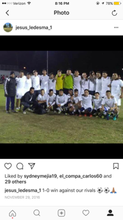
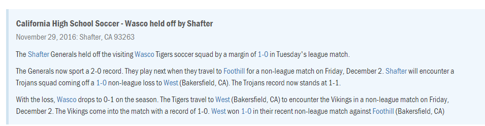
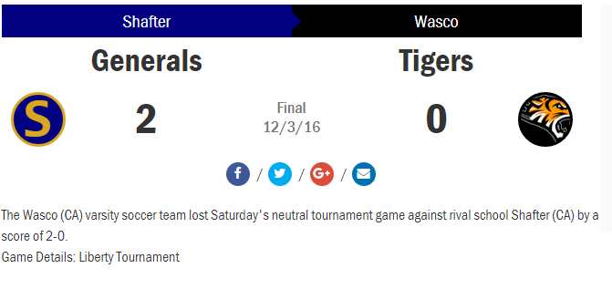
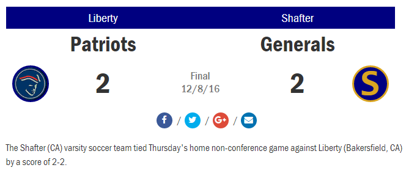
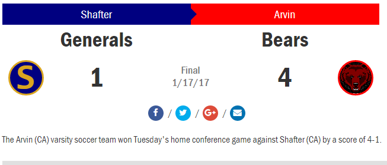
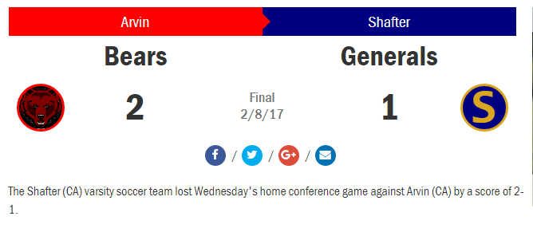
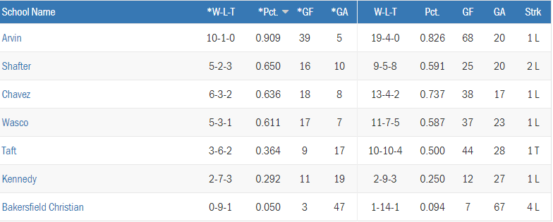

Home
About Us
Shafter High School Soccer Generals

As a soccer General the biggest game for us was against our neighboring rival Wasco.It was a match that we battled an scored in the ending minutes.Sensational saves from both Wasco and Shafter goalies and great ball possoseion from both sides.But ended in favor of us Shafter Generals 1-0.


After beating Wasco it gave us confendence in the Liberty Tournament, but wasnt enough to fight first place but was enough to compete for 3rd place against the Wasco Tigers once again.Once again we took the victory 2-0 this time with Shafter having domination over this game.

Our confendence was high as our games were resutling into wins and tieing with divison 1 school Liberty High School was big for us.

Being 3-0 in league and 7-2 overall recored and Arvin being 10-2 overall.They were a hard opponent.Playing on there home field we were ready for the Arvin Bears,but in the end they proved they were the better team with a devasting loss of 4-1.

Coming the 2nd round games Arvin was once in front of us again.Arvin Bears were now holding a 16-3 record as Shafter was holding a 9-3.This time playing on Shafter grounds.Coming into the game we were ready and concentrated.First half being down 1-0 second half came along and it was ours.Arvin was pulling through with defensive clears and no plays getting through.Shafter then scored and tied the game 1-1.In the ending 20 minites refree calls a penalty in our 18 box which ends the score 2-1 in favor of the Arvin Bears.

After ending our league with a 9-4 record and making playoffs being in 2nd place.Deleno Tigers were our matchup for playoffs.They were holding a 6-10 record.We were confident on this game and we knew Arvin was scared to play us again.

In the end being over confident was what lost us the game against Deleno 3-0.With starters being out and injuies early in game.The game didnt go our way.Arvin then beat Deleno and went on to fight for Valley Champs but ended up losing to Lisndey.We could have beat Arvin and went on to valley but soccer is about being consistent we werent and had good games then bad games.As this 2016-2017 is the past we focus on the 2017-2018 year and plan to go farther.